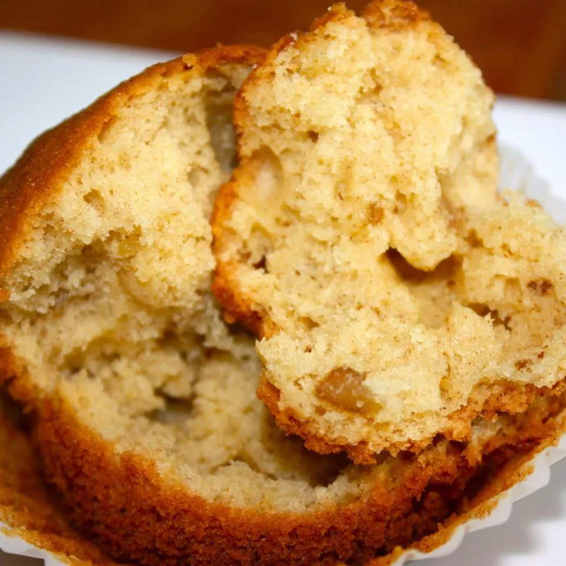

A yummy, kid-approved banana bread that will satisfy! Also adaptable with substitutions
to make vegan. I recommend using all natural, organic, and local ingredients if possible.
This makes 1 loaf, 2 cake pans, or 2 dozen muffins.
Preheat an oven to 350 degrees F (175 degrees C). Lightly grease a 9x5 inch loaf pan.
In a large bowl, combine flour, baking powder and salt. In a separate bowl,
cream together butter and sugar. Stir in eggs, maple syrup and mashed bananas
until well blended. Add the banana mixture to the flour mixture; mix until batter
is just moist. Pour batter into prepared loaf pan.
Bake in preheated oven for 20 to 30 minutes, until a toothpick inserted into
center of the loaf comes out clean. If using muffin or cupcake tins, bake for 15
minutes or until a toothpick inserted into the center of a muffin comes out clean.